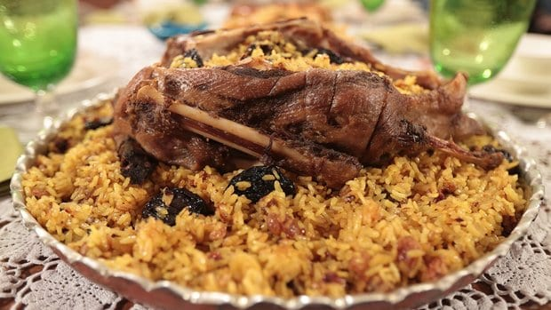

Kars’ın En Meşhur Yöresel Yiyecekleri
HINGEL(Halk Dilinde Hangel Olarak da Bilinir)
Kars yöresel yemekleri listemizin ilk sırasında ülkemizin birçok yerinde yapılan ama Kars’ta yapılanı bir başka olan Hangel ile başlıyoruz. Kars’ın sevilen hamur işe hangel, Anadolu’nun farklı yerlerinde hıngal olarak da adlandırılan bir çeşit mantıdır. Kars mantısı olarak adlandırılan hangel, kıymasız bir mantıdır ve üzerine de farklı bir sos dökülür.
Mantı hamuru gibi ince açılan hamur, küçük kareler şeklinde kesilir ve kaynar suya atılarak haşlanır. Üzerine sarımsaklı yoğurt dökülür. Son olarak da soğan ve salça yağda kavrularak üzerine dökülür ve servis edilir. Yapımı anlatıldığı kadar kolay olmayan Hangel, farklı lezzeti ile özellikle mantı sevenlerin çok hoşuna gidecek. Kars’a yolunuz düşerse bu lezzeti denemeden ayrılmamanızı tavsiye ederiz.
Kars Ketesi
Anadolu’nun neredeyse her şehrinde yapılan kete, Kars mutfağının da olmazsa olmaz hamur işleri arasındadır. Anadolu’nun sevilen bu lezzeti her yörede farklı şekillerde yapılır ve lezzetiyle birbirinden ayrılır. Kars ketesi de kendine has özellikleriyle farkını ortaya koyuyor. İsteğe göre tatlı veya tuzlu yapılabilen kete ne şekilde yapılırsa yapılsın çayın yanında çok iyi gidiyor.
Hamur işleri kategorisinde yer alan kete, oldukça az bir malzemeyle ve kolayca yapılabiliyor. Öncelikle kete hamuru yoğruluyor. İç harcı da ister tuzlu ister tatlı şekilde bol tereyağında unun kavrulması ile hazırlanıyor. Açılan hamurların içerisine iç harcı eklendikten sonra fırında pişirilir ve ister sıcak ister soğuk bir şekilde afiyetle yenir. Kars’ta birçok fırında bulabileceğiniz Kars ketesini mutlaka denemelisiniz.
Kars Kazı Ve Pilavı

Kars mutfağında en çok kullanılan etlerden biri kaz etidir. Hatta kaz eti Kars mutfağı ile özdeşleşmiş bile diyebiliriz. Şehrin vazgeçilmez geleneksel yemeklerinden biri olan Kars kazı ve pilavı, yılın her mevsiminde en çok tüketilen et yemekleri arasında yer alır. Özellikle de kaz etinin kış aylarında daha lezzetli olması nedeniyle kış sofralarından eksik olmaz.
Kaz etinin suyu ile pişirilen pilavla beraber servis edilen Kars kazı, kalabalık misafir sofralarının olmazsa olmazıdır. Pilavla birlikte servis edilen et, hem lezzetli hem de doyurucu olması ile dikkat çeker. Oldukça lezzetli olan kaz eti Kars’ta genellikle tandırda pişirilir ve lezzeti iki katına çıkar.
Kars Katmeri
Kars yöresel yemekleri listesinin neredeyse yarısı hamur işleri ile doludur. Ülkemizin birçok yöresinde yapılan katmer de Kars mutfağının sevilen hamur işlerinden biridir. Diğer yörelerde yapılanla ismi aynı olsa da yapılış şekliyle Kars katmeri fark yaratır. Her ne kadar lezzeti aynı olsa da Kars katmeri, görselliğiyle fark yaratır.
Yöre halkının sık sık yaptığı Kars katmerinin yapımı biraz maharet istiyor. 5-6 adet yufka incecik açılıyor. Araları yağlanarak yufkalar üst üste diziliyor. Daha sonra rulo yapılarak tepsiye diziliyor ve üzerine yumurta sarısı sürülerek pişiriliyor. Kars’ta sabah kahvaltılarından akşam yemeklerine günün her öğününde tüketilebilen Kars Katmeri, Kars’ta birçok fırında bulunur ve lezzetiyle deneyen herkesi kendine hayran bırakır.
Haşıl
Kars mutfağına ait yöresel yemeklerden biri olan Haşıl, Kars’ta yaşayanların genellikle kış aylarında yaptığı bir yemektir. Eski zamanlarda hem basit, hem ucuz, hem de doyurucu olması nedeniyle tarlalarda çalışan işçilere yapılan yemek, çok sevildiği için evlerde de yapılmaya başlanmış ve böylece Kars yöresel yemekleri arasına girmiştir.
Hem lezzetli hem de oldukça sağlıklı olan yemek, buğdaydan hazırlanan bulgurla yapılıyor. Bulgur suda pişiriliyor ve süzülerek tepsiye dökülüyor. Eritilen tereyağı ile karıştırılarak üzerine sarımsaklı yoğurt dökülerek afiyetle yeniyor. Sarımsaklı yoğurt ve tereyağının buluşması ile gözlere, lezzetiyle de damaklara hitap eden lezzet Kars ziyaretlerinizde denemeniz gereken yemeklerin başında gelir.
Kars Gravyeri
Hayvansal ürünleri ile ünlü olan Kars mutfağının en meşhur lezzeti var sırada… Ünü şehir hatta ülke sınırlarını bile aşmış bir lezzet olan Kars gravyeri, diğer adıyla Kars kaşarı, deneyen herkese daha önce yediği kaşarları unutturacak bir lezzete sahip. Ülkemizde üretilen ve dünyanın birçok yerine ihraç edilen Kars kaşarı, adeta milli gururumuz niteliğinde.
Genelde büyük tekerlek şeklinde olan Kars Gravyeri, üçgen şeklinde dilimlenerek servis ediliyor ve görüntüsüyle bile insanda peynir yeme isteği uyandırıyor. Yapımının zahmetli olması nedeniyle oldukça kıymetli olan Kars gravyeri, sabah, akşam günün her öğününde yenir.
Erişte Pilavı
Kars mutfağında el yapımı erişte eksik olmaz. Çorbasından pilavına hatta tatlısına kadar birçok yerde erişte kullanılır ve sevilerek tüketilir. Günümüzde her şeyin hazırı gibi eriştenin de hazırı bulunsa da Kars usulü erişte pilavının gerçek lezzeti ancak el yapımı erişte ile yapılırsa alınır. Klasik pilavlara farklı bir alternatif arayanların çok seveceği erişte pilavına, mis gibi tereyağının kokusu, mercimeğin besleyiciliği ve patatesin doyuruculuğu eklenince ortaya muhteşem bir lezzet çıkıyor.
Kars sofralarından eksik olmayan erişte, köylerde elde açılarak hazırlanıyor. Genellikle et yemeklerinin yanında servis edilen erişte pilavı, Kars’ta en çok tüketilen pilavlar arasında yerini alıyor.
Ekşili Et
Kars mutfağının geleneksel lezzetlerinden biri olan ekşili et farklı lezzetiyle et yemeği sevenlerin favorisi olacak. Kuşbaşı doğranmış etler, domatesli ve soğanlı suda haşlanıyor ve sebzelerle etin lezzetinin muhteşem uyumu et sevenlerin damaklarını şenlendiriyor. Kars ve çevresinde Akşam yemeği sofralarının vazgeçilmezi olan ekşili et, eve gelen misafirlere de mutlaka ikram ediliyor.
Et yemeklerinin sofralardan eksik olmadığı Kars’ın bu yöresel yemeğinin yapımı da oldukça pratik; tereyağında kavrulan etlere domates ve soğan ilave ediliyor. Tuz ve baharatlar da eklenerek pişmeye bırakılıyor. Kısık ateşte piştikten sonra üzerine limon suyu ilave ediliyor ve yemeğin adının hakkını fazlasıyla veriyor. İster tek başına ister yanında pilavla tüketilen yemek, Kars’ta denemeniz gereken lezzetlerin başında gelir.
Feselli
Hem Ardahan hem de Kars yöresinin geleneksel yemekleri arasında bulunan feselli, bölgenin sevilen hamur işlerinden biridir. Özellikle sabah kahvaltılarında ve ara öğünlerde atıştırmalık olarak tüketilen feselli, çayın yanında peynirle ve zeytinle beraber yenildiğinde efsane bir lezzet çıkıyor ortaya.
Hamuru için sadece un, tuz ve su gerekiyor. Elde açılan yufkaların arasına tereyağı sürülüyor ve rulo şeklinde sarılıyor. Kol böreği şeklinde kendi etrafında sarılarak tekrar açılıyor ve pişiriliyor. Tava yerine sacda pişirilirse bir o kadar daha lezzetli oluyor. Kars mutfağının vazgeçilmez hamur işlerinden biri olan feselli, isteğe göre içine başka malzemeler eklenerek gözleme şeklinde de yapılabilir.
Kars Balı
Kars kaşarından sonra Kars’ın en çok bilinen ve ünü şehrin sınırlarını aşmış bir lezzet de Kars balıdır. Her derde deva organik çiçek balı, Kars ve Ardahan bölgesindeki yaylalarda bulunan, Kafkas arıları denilen arıların topladıkların polenlerden yaptıkları baldır. Kars’ın yüksek rakımlı tepelerinde üretilen çiçek balı ağaçların olmadığı, tamamen kır çiçekleriyle kaplı olan yaylaların balıdır. Bölgede tarımın olmaması da ilaçlama yapılmadığı anlamına gelir bu da balın tamamen organik olduğunu kanıtlar.
Sağlığa oldukça faydalı olan Kars balının bir diğer özelliği de kristalize olmasıdır. Hakiki ballarda görülen bu özellik balın yapısını kesinlikle bozmaz, tam tersi tamamen organik olduğunu gösterir. Kristalize olan bal ısıtıldığında içeriğinden bir şey kaybetmeden eski halini alır ve uzun süre bozulmadan kalır.